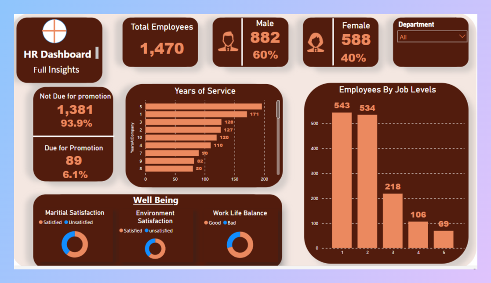
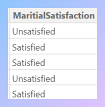
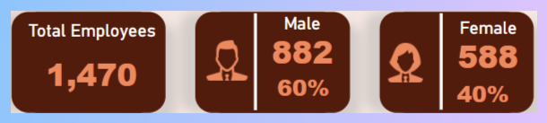
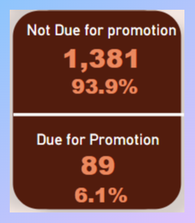

Before transformation

Introduction
This HR analysis report aims to provide an overview of key factors related to diversity and inclusion, employee well-being, distribution across job levels, and the identification of employees due for promotion within the organization. The assessment primarily focuses on gender distribution as a measure of diversity and inclusion, while considering employee satisfaction in terms of marital status, work environment, and work-life balance. By examining these aspects, the report aims to provide valuable insights into the current state of the organization and highlight areas that require attention and improvement. These findings will serve as a foundation for developing strategies and implementing initiatives that foster a more inclusive and supportive work environment, enhance employee well-being, and ensure fair opportunities for career growth and advancement.
Problem Statement
The organization faces challenges related to diversity and inclusion, employee well-being, distribution across job levels, and the identification of employees due for promotion. These issues require attention to ensure an inclusive workforce, enhance employee satisfaction, address potential disparities in career advancement, and establish a streamlined process for recognizing and promoting deserving employees.
Data Sourcing
The organization provided a comprehensive dataset in CSV format for this HR analysis. The dataset includes employee demographics, satisfaction ratings on the work environment, marital status, and work-life balance, as well as information on job levels and promotion eligibility. This dataset serves as the foundation for deriving insights and recommendations to address diversity and inclusion, enhance employee well-being, and ensure fair career opportunities within the organization.
Data Transformation
The provided dataset underwent necessary transformations to enhance its usability for the HR analysis. One significant transformation involved converting all satisfaction ratings into two categories: "satisfied" or "unsatisfied" . This was achieved by creating additional columns using Power Query. Similarly. These transformations enable a comprehensive analysis of employee satisfaction and well-being, providing more accurate insights and targeted recommendations for improvement.
Added transformed column

Analysis and visualization
1.Diversity Findings

In the organization, out of the total of 1470 employees, a gender analysis reveals
a significant diversity gap. Among the employees, 882 individuals identify as male,
while only 588 identify asfemale. This indicates a gender imbalance within the
workforce,
with a higher representation of males compared to females. Addressing this diversity gap
and promoting gender equality will be crucial in fostering a more inclusive and
representative work environment.
2.Employee Well-being Findings
 The analysis of employee well-being revealed that 60.61% of employees were satisfied
with their marital status, while 39.39% expressed dissatisfaction. In terms of
environmental satisfaction, 61.6% reported being satisfied, while 38.4%
expressed dissatisfaction. Regarding work-life balance, 71.16% reported a
good balance, while 28.84% reported a poor balance. These findings highlight
the need to address marital satisfaction, improve the work environment, and support work-life
balance for overall enhanced employee well-being.
The analysis of employee well-being revealed that 60.61% of employees were satisfied
with their marital status, while 39.39% expressed dissatisfaction. In terms of
environmental satisfaction, 61.6% reported being satisfied, while 38.4%
expressed dissatisfaction. Regarding work-life balance, 71.16% reported a
good balance, while 28.84% reported a poor balance. These findings highlight
the need to address marital satisfaction, improve the work environment, and support work-life
balance for overall enhanced employee well-being.
3.Employee Distribution across various job levels Findings
The analysis of distribution across job levels revealed a breakdown of employee distribution as follows:
levels 1 and 2, which represent lower levels, accounted for a combined total of 1077 employees. Level 3
had 218 employees, while levels 4 and 5 had a combined total of 175 employees. This distribution
indicates
a relatively fair progression across job levels, with a larger number of employees at the lower levels
gradually decreasing as the levels advance.
4.Promotion Eligibility Findings
Among the employees analyzed a total of 89 individuals who have been with the
organization for
9 years or more are eligible for promotion. Recognizing these
long-serving employees and
providing them with opportunities for career advancement is crucial to ensure fairness
and rewarding
their
commitment to the organization. By implementing targeted promotion strategies, the
organization can
facilitate
the professional growth of these eligible employees and maximize their contributions.

Click to see an interactive dashboard of the report
Recommendations
- 1.Enhancing Diversity and Inclusion: Address the gender imbalance by implementing initiatives to
promote gender diversity and inclusion within the organization. This can include measures such as
targeted recruitment efforts, diversity training programs, and creating a supportive work environment
that values and celebrates diversity.
- 2.Improving Employee Well-being: Pay attention to employees' marital satisfaction, work
environment, and work-life balance. Provide resources and support systems to help employees maintain a
healthy work-life balance and address any concerns related to marital well-being. Continuously assess
and improve the work environment to ensure employee satisfaction and engagement.
- 3.Recognizing Long-Serving Employees: Develop a formalized recognition program for employees who
have been with the organization for an extended period without receiving a promotion. Implement
strategies such as skills assessment, mentoring, and personalized development plans to provide growth
opportunities and recognize their contributions.
- 4.Continuous Data Analysis: Regularly analyze and monitor HR data to identify emerging trends,
areas of improvement, and potential disparities. Use data-driven insights to inform decision-making
processes and drive targeted interventions that support diversity, employee well-being, and career
development.